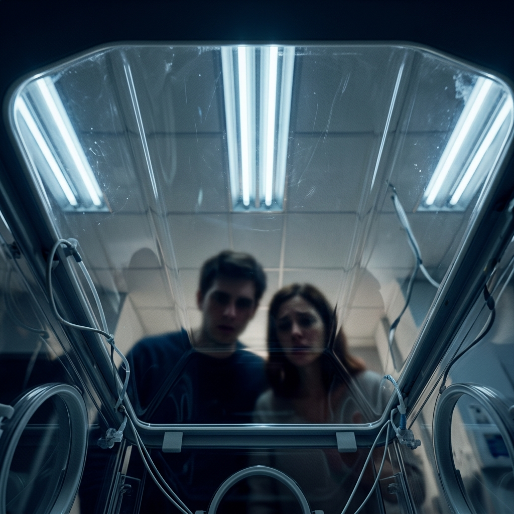
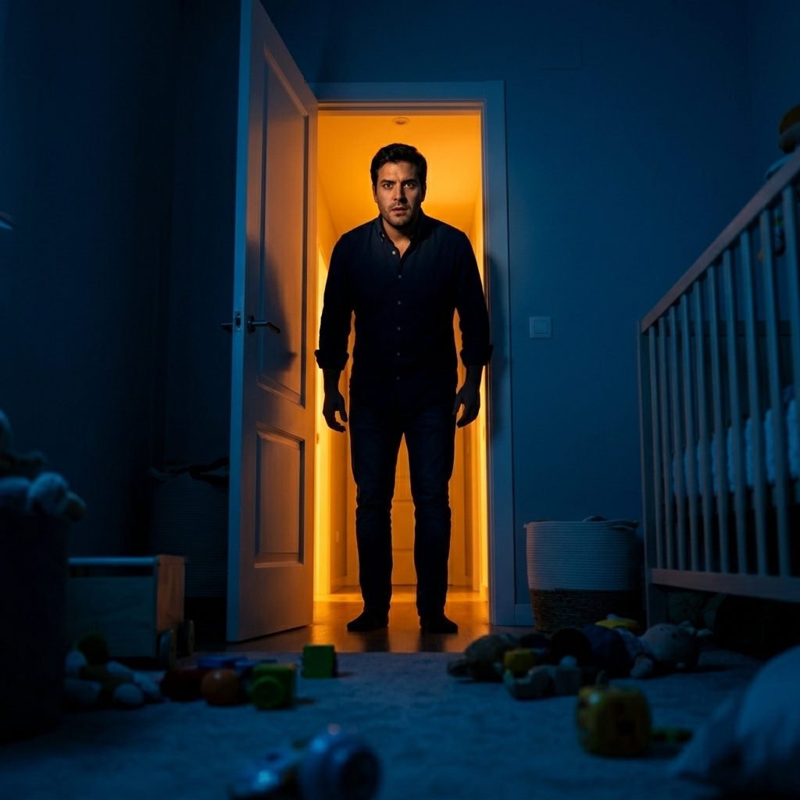
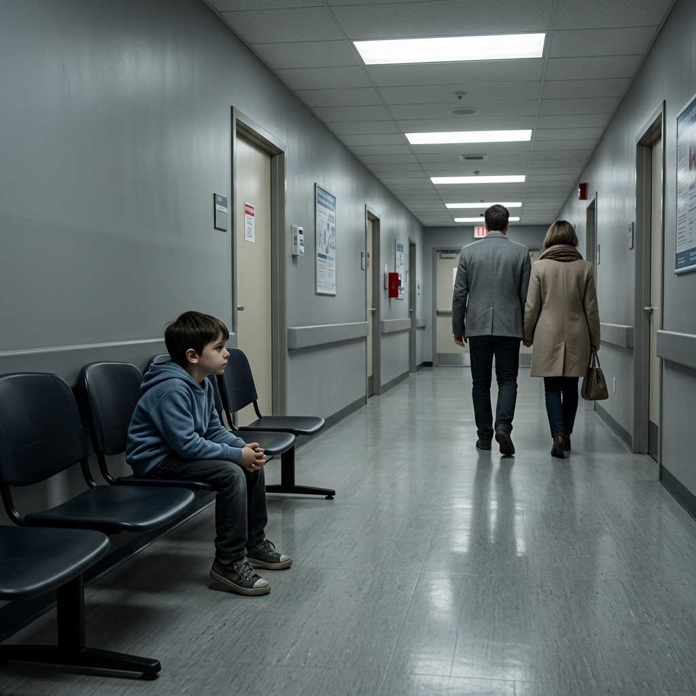
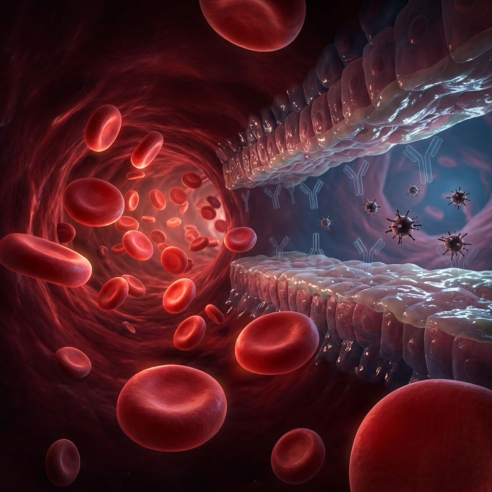
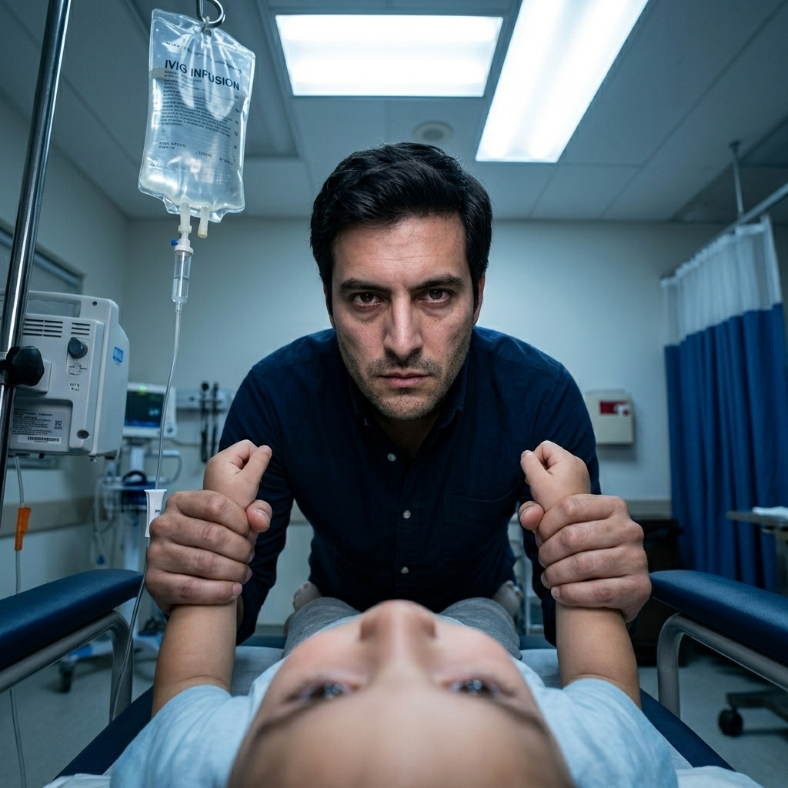
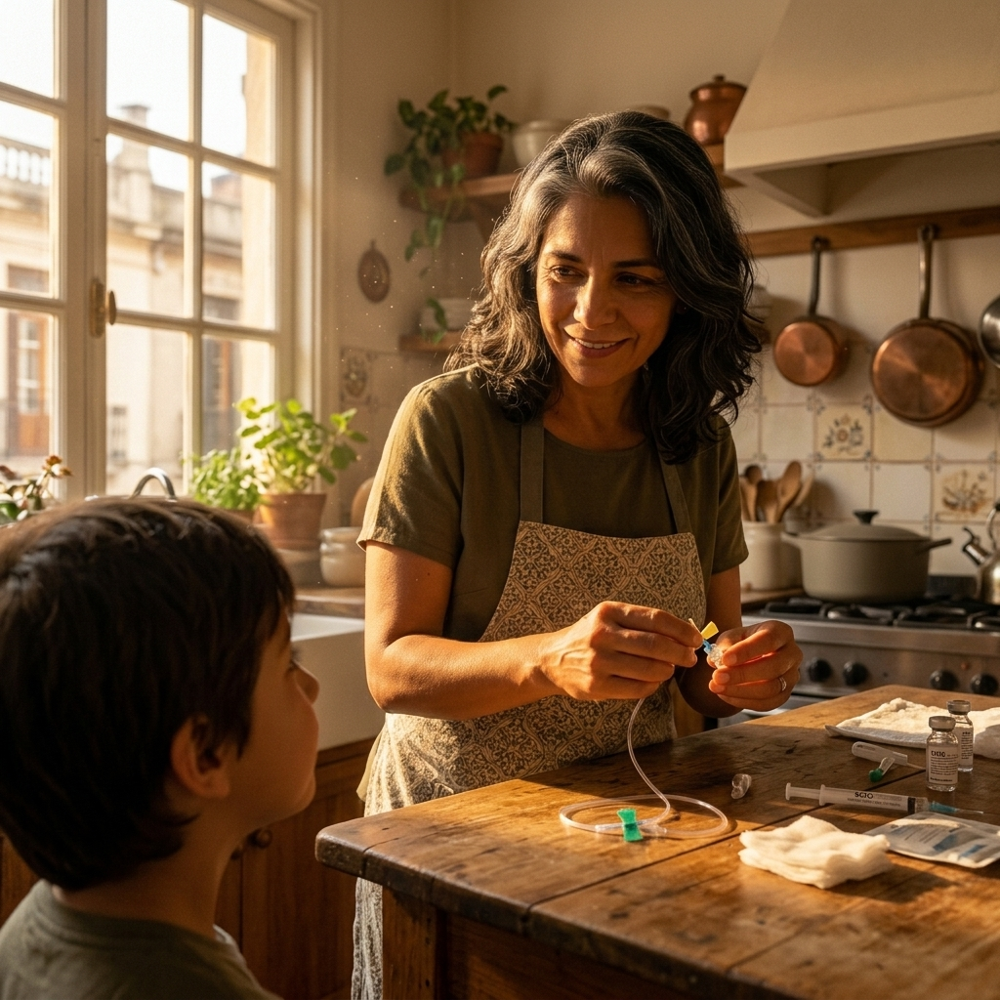
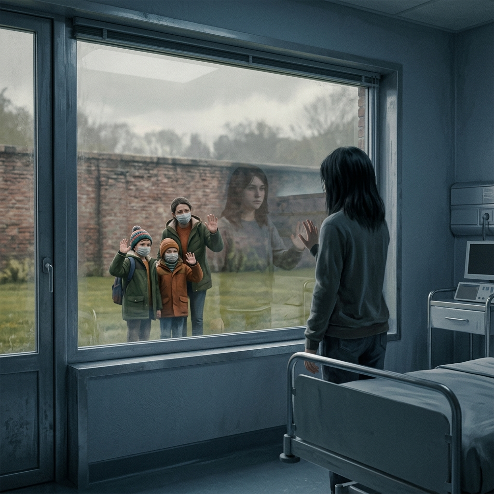
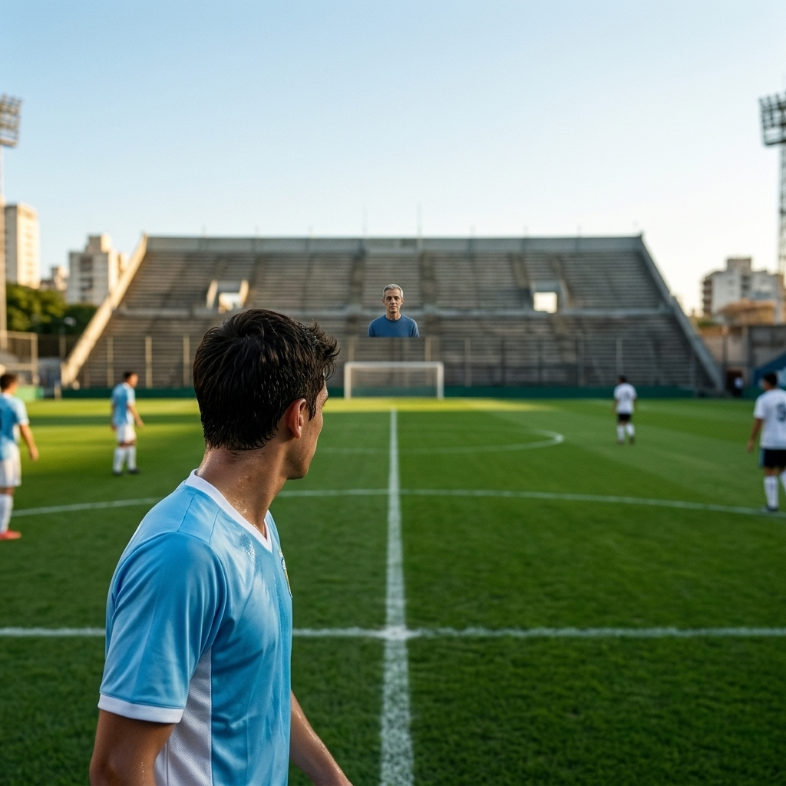
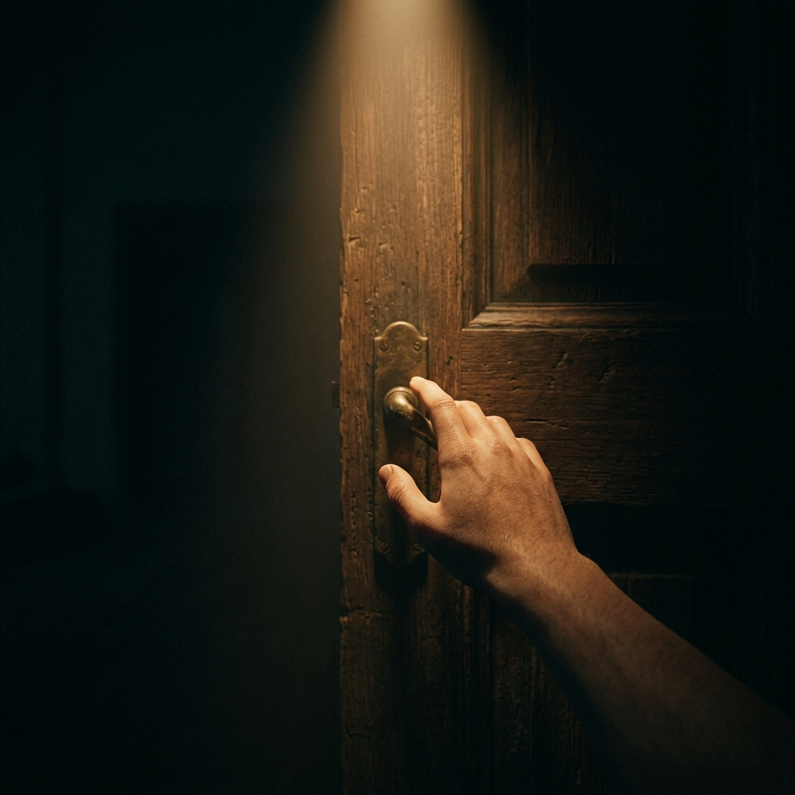

InnovaSalud · Meta Quest 3 · Buenos Aires · 2026
Una experiencia inmersiva sobre inmunodeficiencia primaria
Scene 01 · Apertura
"El primer grito… fue suficiente para saber que estaba vivo. No fue suficiente para saber que iba a seguir estando."
1:30 · POV 30cm · Recién nacido
Scene 02 · NICU
"Estuvo 37 días internado en cuidados intensivos, con asistencia respiratoria mecánica. La fragilidad era palpable."
3:00 · POV 30cm · Dentro de la incubadora
Scene 03 · Casa / Hospital
"La tos era lo que antecedía la tormenta. Yo saltaba de la cama literalmente."
3:00 · POV 60cm · Hipervigilancia
Scene 04 · Silencio
"Había otro hermano… que se lo dejó congelado al margen."
2:00 · POV 70cm · El hermano desplazado
Scene 05A · Molecular Journey
"Los pulmones y el corazón trabajan en sincronía. Si los pulmones trabajan mal, el corazón tiene que hacer el trabajo que hacen ellos."
3:30 · Escala molecular · Anticuerpos ausentesScene 05B · Diagnóstico
"Dra. Bezrodnik le dio un nombre a lo que le pasaba. El fin de la odisea."
2:30 · POV 90cm · Alivio que no tiene dónde ir
Scene 06 · El Núcleo Emocional
"Vos sos malo. Esto — yo soy malo — esto lo decido yo que soy tu papá. Se terminó."
3:30 · POV 90cm LOCKED · Daño moral
Scene 07 · Liberación
"No tengo palabras para describir cómo nos cambió a todos la vida. Las torturas se terminaron."
3:00 · POV 110cm · SCIG en casa
Scene 08 · Pandemia
"Los hermanos son las víctimas silenciosas, porque les quitamos foco y los limitamos con algo que ellos tampoco lo eligieron."
2:00 · POV 165cm · 2020
Scene 09 · El Pago Ganado
"Es muy habilidoso, la verdad que sí. Y loco, muy reverado, de pocas pulgas."
2:00 · POV 175cm · Juanma a 40m en las tribunas
Scene 10 · La Coda
"¿Será que soy tan cauto, tan desconfiado? No quiero decirle eso a Bautista y que en un año y medio le digan: no, me equivoqué."
1:30 · POV 180cm · Esperanza ambigua